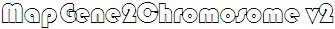

v1.0
|
v1.1
|
v2.0
|
v2.1
parameters setting
chromosome id
font
| size
px| color
SVG container
width
px| height
px
single chromosome container
width
px| height
px| fill
border-width
px| border-color
chromosome
width
px| height
px| fill
RX
px| RY
px
border-width
px| border-color
gene lines
color
| width
px| type
gene id
font
| size
px| color
margin
connection between gene id and gene line
color
width
scale
units
| width
px| position_X
px
N_tick mark
| decimal place
Input1 of genes' information which contains four columns: 1.gene ID; 2.start position of gene; 3.end position of gene; 4.chromosome ID of gene
Input2 of chromosome length which contains two columns: 1.chromosome ID; 2.chromosome sequence length.
gsample1 4200 8400 Chrom01 gsample2 15000 20000 Chrom01 gsample3 25000 30000 Chrom01 gsample4 35000 40000 Chrom01 gsample5 45000 49000 Chrom01 gsample6 3000 7000 Chrom02 gsample7 10000 14000 Chrom02 gsample8 18000 22000 Chrom02 gsample9 26000 30000 Chrom02 gsample10 35000 40000 Chrom02
Chrom01 54000 Chrom02 45000
aaa
Copyright to 2014~2019 MG2C bioinformatics group
email:chaojiangtao@caas.cn; QQ_group£º830731446